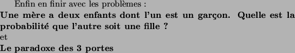

suivant:
Le problème
monter:
Les raisonnements intuitifs
précédent:
Le vrai
Le faux
Ok, un des 2 est un garçons, mais ca n'influence pas le sexe de l'autre. Donc si je considère l'autre, les chances sont de

.
Pierre Dangauthier 2004-10-18